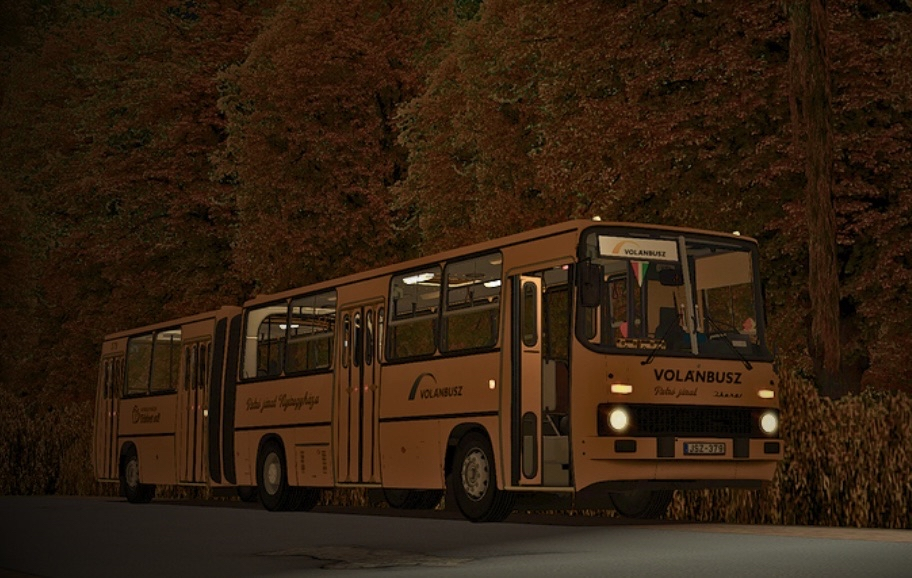
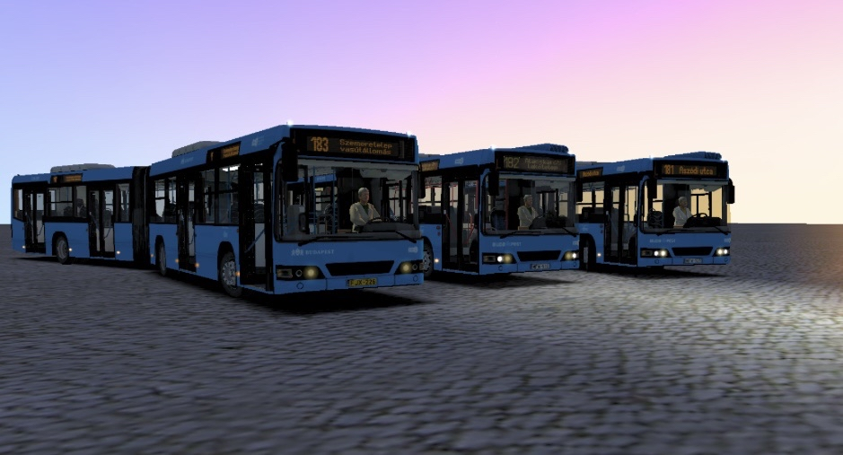

Projektek

Ikarus 280.02
A Jól ismert Ikarus 280.02 részletesen kidolgozott - Hangsúlyt emeltünk a készítése során arra, hogy visszaadja azt, amit a valóságban is produkált.

Volvo 7700A
A Volvo 7700A Mod, a Valiant Citybus Family DLC-hez készült, mint budapesti mod.
Egy korszerű városi autóbusz, melynél a valósághű megjelenés, s használhatósága a fő szempont.
A Valiant Citybus Family DLC - A mod működéséhez szükséges

Ikarus260.30M
GNX-342